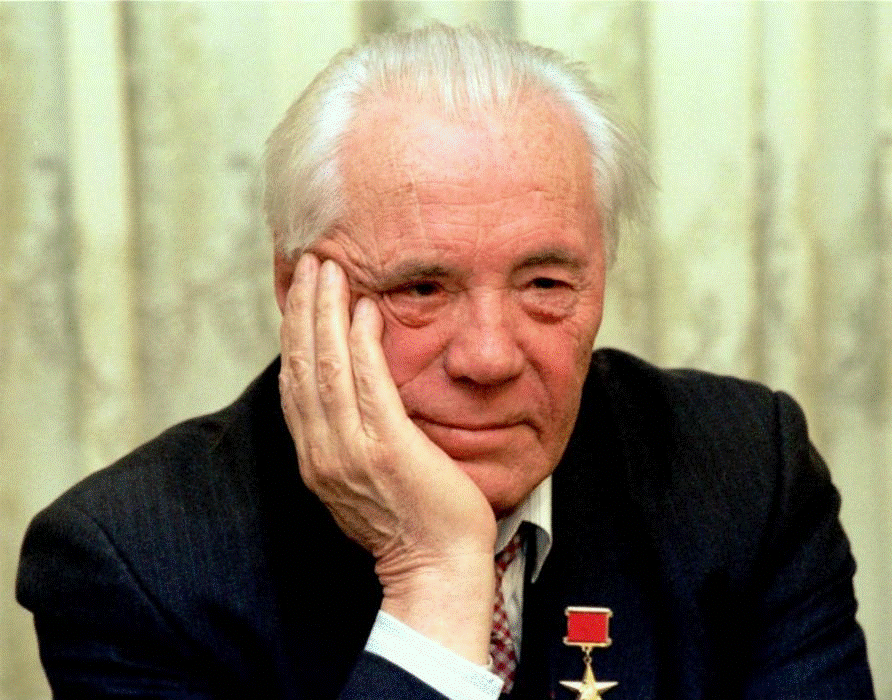

Астафьев Виктор Петрович (1924-2001)
Астафьев Виктор Петрович (1924-2001) - русский писатель, драматург, эссеист. Герой Социалистического Труда. Лауреат двух Государственных премий СССР и трёх Государственных премий России. Член Союза писателей СССР. Участник Великой Отечественной войны. Рядовой.

В 1942 году Виктор Астафьев ушел добровольцем в армию, а 1943 году уже попал на фронт. Боевой путь прошел его на Брянском, Воронежском и Степном фронтах, затем, на Первом Украинском. На фронте Виктор Петрович сменил несколько специальностей: был разведчиком, водителем и связистом. Несколько раз был тяжело ранен. За смелость и решительность, проявленные в годы войны Астафьев отмечен наградами: ордена Красной Звезды, медали «За отвагу», «За освобождение Польши», «За победу над Германией».